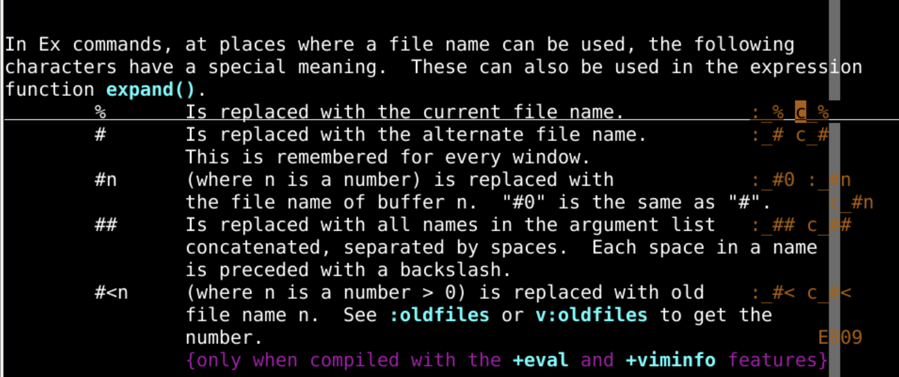
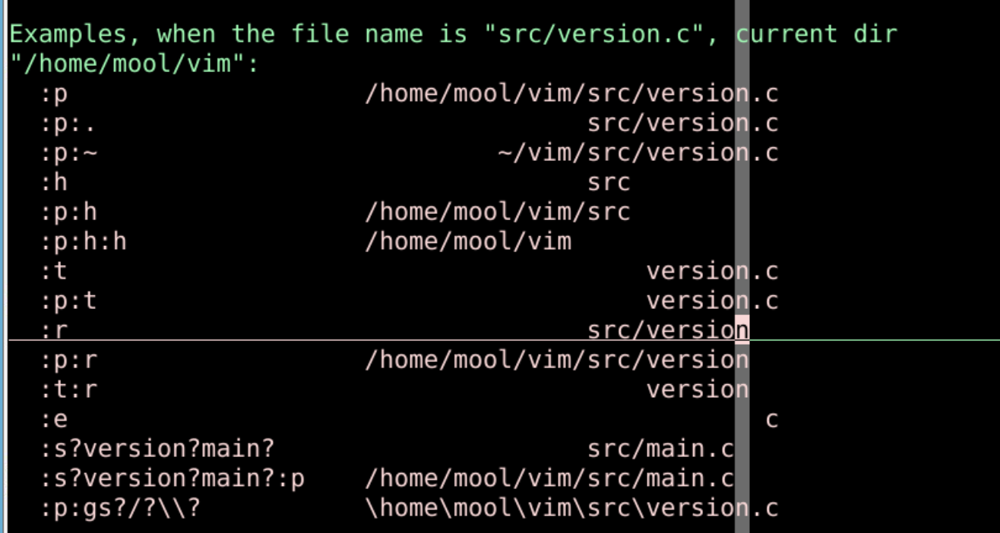
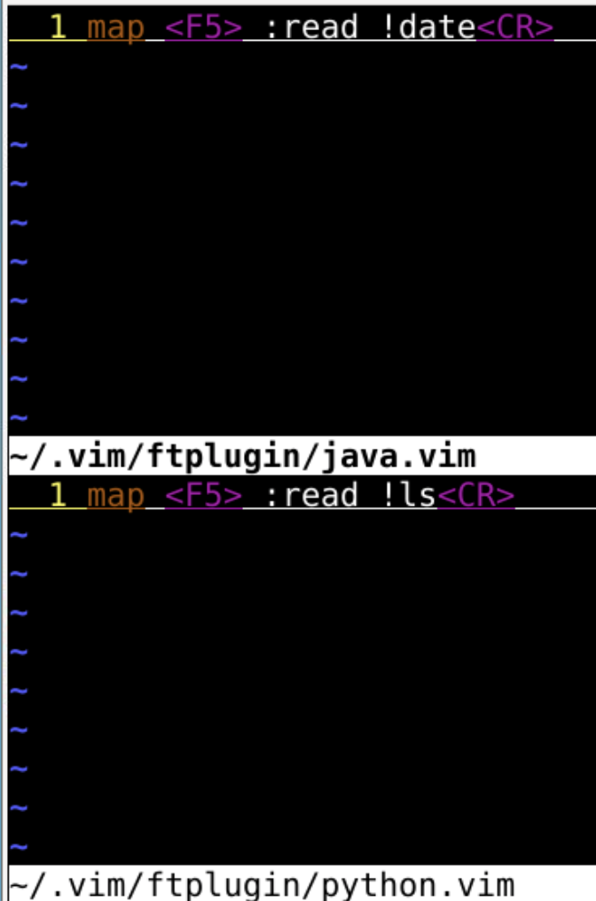

映射map
回忆上次缩写的细节
- 上次了解到了
:map映射 - 可以定义映射
:map ; :
- 查询映射
:map:map ;
- 还可以取消映射
:unmap
-
可以映射到指定的模式
:map所有模式:vmap可视化模式 visual:nmap正常模式 normal:omapoperartor-pending 被定义的键可以作为一个motion来使用:map!插入和命令行模式:imap插入模式 insert:cmap命令行模式 command
-
可以映射到什么也不做
:nmap h <nop>
- 还可以避免再次映射
:noreabbrev o1z oeasy
- 最后我们比较了缩写和映射的异同
- 这
缩写和映射都是可以:mkview保存的 - 也可以写到
~/.vimrc作为基础映射 - 还可以写到具体的
filetype中做一些专门的操作
- 这
- 但是其实101键盘上面很多功能键
- f1-f12
- 我们还没有用上
- 可以给他们映射上么？🤔
功能键映射
- 第一个f1是有映射的
- 如果在终端模式下运行就会到帮助文件
- 如果在图形化的终端模式下运行就会到terminal的帮助
- f2我们可以映射么？
:map <F2> gg=G- 注意这个时候map空格之后
- 可以直接按下f2
- 就直接输入
- 很好使！
- 但是我们应该再限制一下,映射只会出现在Normal模式
:nmap <F2> gg=G
- 我们再试一个
快速插入日期
- 我们需要在文章最后写一个日期时间
:map <F2> oDate: <ESC>:read !date<CR>- o的意思是换行插入
- 插入的内容就是
Date:
- 插入的内容就是
- esc退回到正常模式
:进入命令模式- 执行
:read !date - 把外部命令
date的结果read到buffer上 - 然后
是回车Carriage - 退回到正常模式
- 整个操作完成
- 执行
- 真的能用！！！
- 这样就可以快速插入落款日期了
- 还可以进行一些修改
:map <F2> oDate: <ESC>:read !date<CR>kJk向上一行J把当前行和下一行链接
- 如果要求在文本最后插入的话
:map <F2> GoDate: <ESC>:read !date<CR>
- 其实我们常用的就是程序的编译运行之类的
- 这个映射能干么？
运行python程序
- 这次我们用
来干这个事情 - 我们先在命令行里面走一遍
:!python3 %- 其中%是当前文件名
- 相当于
:!python3 oeasy.py :h c_%

- 把他转化为映射
:map <F5> :!python3 %
- 先保存
:map <F5> :w<CR>:!python3 %<CR>
- 以后就可以一键运行python程序了
编译并运行java程序
- 仿照上次
:map <F5> :w<CR>:!javac %<CR>- 这样是可以完成编译的
- 然而运行的时候我需要
:!java oeasy- 这就得去掉后缀
:!java %:t:r

-
最终的映射语句是
:map <F5> :w<CR>:!javac %<CR>!java %:t:r<CR>
-
保存、编译、运行一气呵成
- 不过python、java、html都映射到了F5
- 能否根据文件类型进行区分呢？
文件类型映射
- 观察文件类型检测
:filetype
- 具体的文件应该放在哪儿呢？

具体操作
- 在
~/.vim/ftplugin/下面放入文件类型的配置文件~/.vim/ftplugin/java.vim对应java文件~/.vim/ftplugin/python.vim对应python文件

- 现在我们就分别对于java和python文件定义了F5这个操作
- 其实网页编辑也很常见
- 如何在网页中一键预览？
一键预览火狐
- 本终端开火狐
firefox!firefox
- 首先在终端上可以另开一个火狐进程
xfce4-terminal -e 'firefox'- 我们的终端是xfce的
- 如果是gnome的话也类似
- 这可以在终端中新开一个终端
- 新终端中运行火狐
xfce4-terminal -e 'firefox oeasy.html'- 让火狐浏览你的网页
- 把这套放到vim里面跑一下
:!xfce4-terminal -e 'firefox %'- 成功在vim里跑了起来
- 然后就是映射map
:map <F5> :!xfce4-terminal -e 'firefox %'
- 可以的！
- 然后把这句话写到
html的ftplugin中
总结
- 这次我们定义了一系列的功能键
- 让他们可以起到作用
- 比如保存、编译、运行一键完成
- 但是不同的文件类型应该有不同的处理方式
- 我们用
filetype的机制解决了这个问题
- 这些映射就像缩写和折叠一样
- 可以
:mkview保存着
- 可以
- 除了功能键之外
- 组合键能映射么？
- 比如ctrl+s之类的？🤔
- 下次再说！